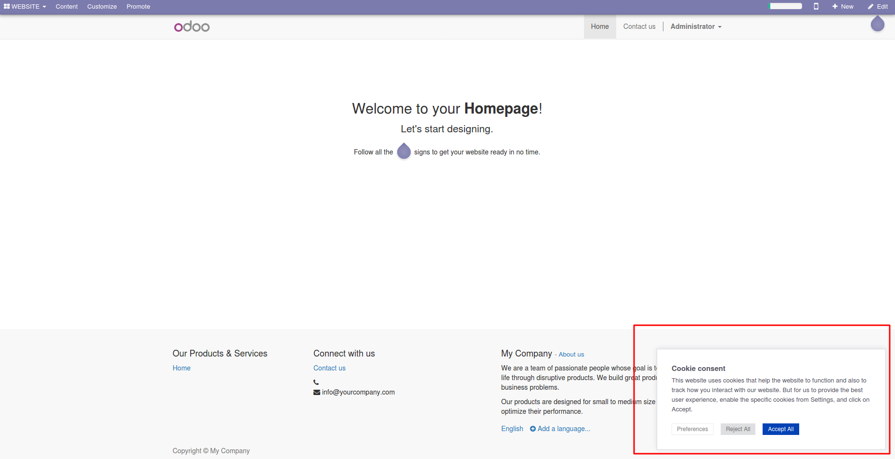

Cookie notice external
This module allows to insert a cookie script from any cookie service provider
This module adds a new parameter for including an external cookie consent script from any source (cookie-script, cookie yes...).
Once installed go to Website Admin > Configuration > Settings; then add the URL of the script on the parameter "Cookie script" inside of group "Domain" inside of two script tags:
<script id="somethingid" type="text/javascript" src="URL"></script>
Now the Cookie notice will be available from the main webpage.
